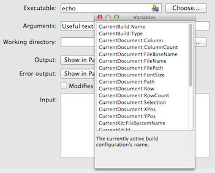

VariableChooser Class
class Utils::VariableChooserThe VariableChooser class is used to add a tool window for selecting Qt Design Studio variables to line edits, text edits or plain text edits. More...
| Header: | #include <coreplugin/variablechooser.h> |
| Inherits: | QWidget |
Public Functions
| VariableChooser(QWidget *parent = nullptr) | |
| void | addMacroExpanderProvider(const Utils::MacroExpanderProvider &provider) |
| void | addSupportedWidget(QWidget *textcontrol, const QByteArray &ownName = QByteArray()) |
Detailed Description
If you allow users to add Qt Design Studio variables to strings that are specified in your UI, for example when users can provide a string through a text control, you should add a variable chooser to it. The variable chooser allows users to open a tool window that contains the list of all available variables together with a description. Double-clicking a variable inserts the corresponding string into the corresponding text control like a line edit.

The variable chooser monitors focus changes of all children of its parent widget. When a text control gets focus, the variable chooser checks if it has variable support set. If the control supports variables, a tool button which opens the variable chooser is shown in it while it has focus.
Supported text controls are QLineEdit, QTextEdit and QPlainTextEdit.
The variable chooser is deleted when its parent widget is deleted.
Example:
QWidget *myOptionsContainerWidget = new QWidget; new Utils::VariableChooser(myOptionsContainerWidget) QLineEdit *myLineEditOption = new QLineEdit(myOptionsContainerWidget); myOptionsContainerWidget->layout()->addWidget(myLineEditOption); Utils::VariableChooser::addVariableSupport(myLineEditOption);
Member Function Documentation
[explicit] VariableChooser::VariableChooser(QWidget *parent = nullptr)
Creates a variable chooser that tracks all children of parent for variable support. Ownership is also transferred to parent.
void VariableChooser::addMacroExpanderProvider(const Utils::MacroExpanderProvider &provider)
Adds the macro expander provider provider.
void VariableChooser::addSupportedWidget(QWidget *textcontrol, const QByteArray &ownName = QByteArray())
Marks the control textcontrol as supporting variables.
If the control provides a variable to the macro expander itself, set ownName to the variable name to prevent the user from choosing the variable, which would lead to endless recursion.